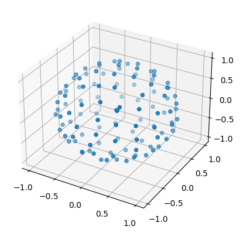
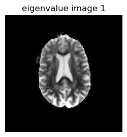
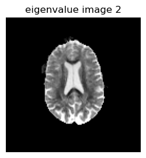
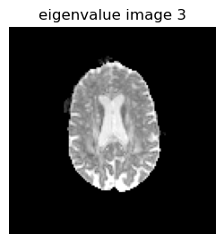
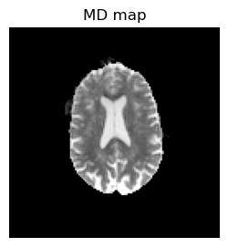
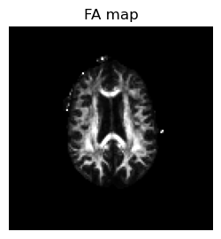

DTI data processing¶
Adam Bernstein
2021-04-15
BME 639: Magnetic Resonance Imaging
The University of Arizona
The goal is to illustrate diffusion tensor imaging data processing, including the calculation of mean diffusivity (MD) and fractional anisotropy (FA)
The matrix size for data set is \(128 \times 128 \times 3 \times 130 \) (in-plane matrix size: 128x128; 3 slices; 130 images with obtained with diffusion encoding schemes shown in bval and bvec)
push!(LOAD_PATH,"juliafunction");
using PyPlot
using Read_NIfTI1
using DelimitedFiles
using LinearAlgebra
using Statistics
┌ Info: Precompiling PyPlot [d330b81b-6aea-500a-939a-2ce795aea3ee]
└ @ Base loading.jl:1260
┌ Info: Precompiling Read_NIfTI1 [top-level]
└ @ Base loading.jl:1260
# Load in Diffusion Weighted Images and diffusion weighting information
# DWI
filename = "data/dwi.nii.gz";
headerinfo = load_niigz_header(filename);
dwi = load_niigz_data(filename, headerinfo);
# Brain Mask
filename = "data/mask.nii.gz"
headerinfo = load_niigz_header(filename);
mask = load_niigz_data(filename, headerinfo);
# b-vectors
bvecs = readdlm("data/bvec");
# b-values
bvals = readdlm("data/bval");
# Display diffusion directions measured
scatter3D(bvecs[1,:], bvecs[2,:], bvecs[3,:]);

# Construct a 'B-Matrix' for linear fitting based on b-values and b-vectors
b_mat = ones(size(dwi)[4],7)
b_mat[:,2] = bvecs[1,:] .^ 2;
b_mat[:,3] = bvecs[2,:] .^ 2;
b_mat[:,4] = bvecs[3,:] .^ 2;
b_mat[:,5] = 2 * bvecs[1,:] .* bvecs[2,:];
b_mat[:,6] = 2 * bvecs[1,:] .* bvecs[3,:];
b_mat[:,7] = 2 * bvecs[2,:] .* bvecs[3,:];
for i = 2:7
b_mat[:,i] = b_mat[:,i] .* -bvals'
end
# First column of b-matrix is all ones, which is used to fit the b=0 value, especially important when we have multiple b=0 images
# Perform Linear fit for each voxel
eigen_values = zeros(size(dwi)[1], size(dwi)[2], size(dwi)[3], 3);
Tensor = zeros(3,3)
# dwi = log.(dwi)
@time for i = 1:size(dwi)[1]
for j = 1:size(dwi)[2]
for k = 1:size(dwi)[3]
if mask[i,j,k] != 0
D = b_mat \ log.(dwi[i,j,k,:]);
Tensor[1,1] = D[2];
Tensor[1,2] = D[5];
Tensor[1,3] = D[6];
Tensor[2,1] = D[5];
Tensor[2,2] = D[3];
Tensor[2,3] = D[7];
Tensor[3,1] = D[6];
Tensor[3,2] = D[7];
Tensor[3,3] = D[4];
# Diagonalize Tensor to get EigenValues
eigen_values[i,j,k,:] = eigvals(Tensor);
end
end
end
end
2.118972 seconds (6.24 M allocations: 1.136 GiB, 7.83% gc time)
# Display EigenValue Images
figure(1, figsize=(3,3))
imshow(reverse(permutedims(eigen_values[:,:,1,1],[2 1]),dims=1),cmap="gray", vmin=0, vmax=0.001);axis("off"); title("eigenvalue image 1")
figure(2, figsize=(3,3))
imshow(reverse(permutedims(eigen_values[:,:,1,2],[2 1]),dims=1),cmap="gray", vmin=0, vmax=0.001);axis("off");title("eigenvalue image 2")
figure(3, figsize=(3,3))
imshow(reverse(permutedims(eigen_values[:,:,1,3],[2 1]),dims=1),cmap="gray", vmin=0, vmax=0.001);axis("off"); title("eigenvalue image 3");



# Calulate MD
MD = mean(eigen_values, dims=4);
figure(1, figsize=(3,3))
imshow(reverse(permutedims(MD[:,:,1],[2 1]),dims=1), cmap="gray", vmin=0, vmax=0.001);axis("off"); title("MD map");

# Calulate FA
numerator = sqrt.((eigen_values[:,:,:,1] - eigen_values[:,:,:,2]) .^ 2 + (eigen_values[:,:,:,2] - eigen_values[:,:,:,3]) .^ 2 + (eigen_values[:,:,:,3] - eigen_values[:,:,:,1]) .^ 2);
denominator = sqrt.(eigen_values[:,:,:,1] .^ 2 + eigen_values[:,:,:,2] .^ 2 + eigen_values[:,:,:,3] .^ 2);
FA = sqrt.(0.5) * numerator ./ denominator;
FA[isnan.(FA)] .= 0;
figure(1,figsize=(3,3))
imshow(reverse(permutedims(FA[:,:,1],[2 1]),dims=1), cmap="gray", vmin=0, vmax=0.7);axis("off");title("FA map");
